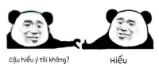
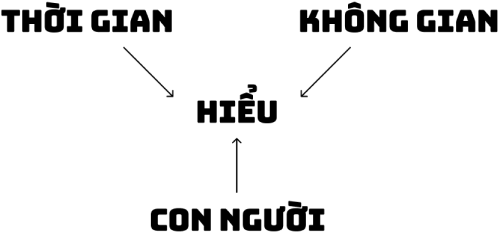
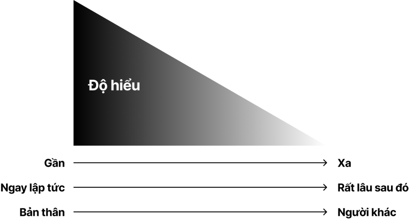
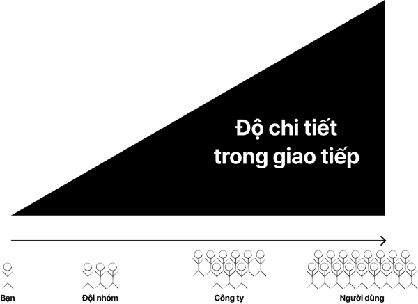
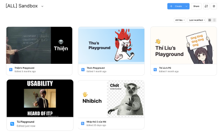
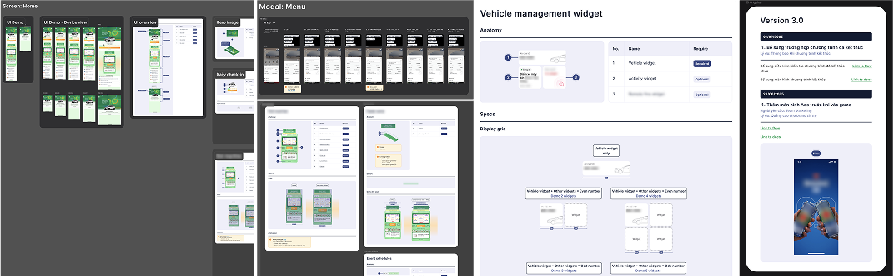
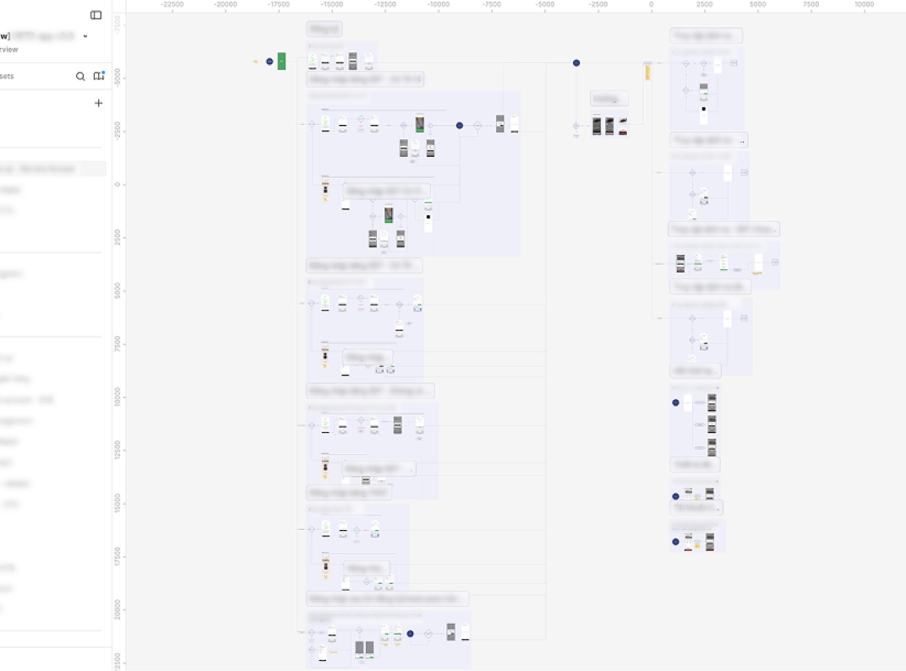

Bài viết dành cho những bạn designer đang cảm thấy làm việc cứ hay bị trục trặc khi nói chuyện với mọi người…
Tại sao cần giao tiếp?
Trong một tổ chức, thường có 6 lý do chính khiến Product designer phải giao tiếp. Bao gồm:
- Thông báo / Cập nhật
- Thuyết phục / Đảm bảo sự đồng thuận
- Hợp tác / Lên ý tưởng
- Tìm kiếm phản hồi / Nghiên cứu
- Giải quyết xung đột
- Bàn giao
Nhưng tựu trung lại đều là việc chia sẻ thông tin để hiểu nhau.

Vậy độ hiểu nhau này bị ảnh hưởng bởi những yếu tố nào? Nói văn vẻ thì sẽ phụ thuộc vào 3 yếu tố trong triết lý phát triển bền vững của phương Đông. Đó là Thiên - Địa - Nhân, thời gian, không gian và con người.

Dưới đây là một hình minh họa giúp bạn dễ hiểu hơn về mối tương quan và ảnh hưởng giữa các yếu tố này.

Độ hiểu nhau sẽ luôn giảm dần từ khoảng cách gần đến xa, từ ngay thời điểm hiện tại cho đến rất lâu sau đó, từ bản thân mình đến những người khác. Trong môi trường làm việc có rất nhiều ví dụ để bạn có thể hiểu khái niệm này:
Không gian: Khi bạn làm việc remote còn cả đội đang làm tại văn phòng, sếp bạn chat về một vấn đề gì đó trong group chat, bạn chat lại nêu ý kiến và bạn cảm thấy một sự im lặng kéo dài vô tận, dù có thể chỉ mới ghi cách đây 5 phút, và vấn đề đó thì chưa được giải quyết. Lúc bấy giờ ở công ty, thật ra các đồng nghiệp của bạn đang bàn luận sôi nổi về giải pháp cho vấn đề đó và có thể đang tham vấn với sếp luôn rồi. Nhưng vì rào cản về khoảng cách không gian, bạn không thể hiểu và không biết chuyện gì đang xảy ra.
Thời gian: Sếp bạn feedback design trực tiếp cho bạn, cần sửa cái UI component này, đổi cái interaction này, thay cái nội dung content này lại. Ngay lúc đó, bạn hiểu hết cần làm những gì, nhưng vì đang có task cần làm nên bạn comment vào Figma 3 chữ thần thánh “Sửa cái này”. Ngày mai bạn mở file để sửa và “Ủa! Sửa cái này là sửa cái gì ta!!!”…
Con người: Bản thân mình luôn hiểu các ý tưởng của mình, lúc nào cũng thấy chúng hay vãi cả. Xong, mình đi nói ý tưởng với đồng nghiệp và sếp. Mọi người nghe xong chả thấy nó hay gì vì một lẽ đơn giản: mỗi người tiếp nhận thông tin và mã hóa theo thế giới quan của mình. Nếu chỉ là ngôn từ thì mỗi người sẽ tưởng tượng ra một hình thái ý tưởng khác nhau.
Vậy để tăng độ hiểu lên thì sẽ cần làm gì? Nếu xem “Độ hiểu” là output metric (chỉ số kết quả mà mình không tác động trực tiếp được) thì “Độ chi tiết trong giao tiếp” sẽ là input metric (chỉ số mình có thể tác động để tăng hoặc giảm). Tăng “Độ chi tiết trong giao tiếp” ắt sẽ tăng “Độ hiểu”.

Biểu đồ trên là sự kết hợp giữa không gian, thời gian và con người. Chúng ta sẽ có một trục hoành từ “Bạn” càng xa, càng lâu, càng khác cho đến “Người dùng”. Khi bạn có 2 giải pháp layout cho một vấn đề, gọi là option A và option B, bạn nháp ra giấy là bạn đã có đủ thông tin để quyết định nên chọn A hay B. Với đội nhóm, bạn cần thiết kế chỉn chu để cả đội hiểu giải pháp của bạn là gì. Với các phòng ban khác hoặc toàn thể công ty - những người không có kiến thức nền về thiết kế, bạn cần trình chiếu và thuyết trình. Với khách hàng, bạn cần sự hợp tác giữa các phòng ban khác để có thể ra mắt thành phẩm thật để A/B testing, quảng cáo tính năng trên báo chí / mạng xã hội... Độ chi tiết sẽ tăng dần như vậy.
Dưới đây sẽ là một số hình ảnh ví dụ về độ chi tiết trong giao tiếp thông qua Figma, mà mình và team mình có áp dụng cho các tổ chức đã và đang làm việc:
Bạn → Đội nhóm (designer - đồng nghiệp)

Trong Figma của team mình sẽ luôn có một project tên là Sandbox. Trong đó sẽ là nơi để tất cả designer có thể tự do tạo ra mọi thứ mà người đời sẽ không dị nghị, lãnh thổ riêng không ai tìm đến ai. Mỗi bạn sẽ có một file riêng trong đó để có thể làm nháp về ý tưởng hoặc vẽ vời lung tung, ngoài những file của từng cá nhân thì cũng có thể có file sandbox của feature để nhiều bạn cùng vào trong đó làm mà không bị cảm giác đang design mà thấy con chuột của Product hay Engineer tự nhiên lượn lờ trong file.
Bạn → Đội nhóm (Engineer)
Với công việc là Product designer thì ai cũng sẽ phải ít nhất một lần trải qua việc mình design một đằng mà dev build ra một nẻo. Thực tế, có thể một phần là do chúng ta giao tiếp chưa đủ chi tiết với đội Engineer. Để giao tiếp hiệu quả với Engineer, điều kiện tiên quyết là file handoff của chúng ta phải cực kỳ chi tiết, đầy đủ và rõ ràng. Ví dụ như đây là một vài snapshot của file handoff mà team mình làm để giao tiếp với engineer.

Khi nào có thời gian, mình sẽ viết chi tiết hơn về template của một file handoff như thế nào nhé. Nhưng trước mắt, cơ bản một file handoff cần những thông tin như sau:
- Change log: Ghi lại sự thay đổi của version này so với version trước (Sửa cái gì? Ai yêu cầu? Tại sao sửa? Sửa khi nào?).
- Flows: Chứa các luồng người dùng của tính năng cần handoff.
- UI: Chứa các specs cụ thể của từng màn hình UI trong tính năng cần handoff.
- UI demo: Các case xảy ra của màn hình UI đó
- Device view: Kiểm tra về khả năng responsive với các thiết bị khác nhau
- Specs: Giải phẫu từng section / component / element về các properties, variants và logic hiển thị.
Bạn → Công ty (các phòng ban khác)
Với những phòng ban khác, cũng như Ban lãnh đạo, những người không nắm rõ chi tiết về tiến độ và cách hoạt động của thiết kế luôn cần một file tổng hợp. Tùy vào phòng ban nào mà sự quan tâm của họ đối với file này khác nhau, ví dụ phòng Marketing sẽ quan tâm tới việc có thể export được các screenshot mới nhất của app để làm hình quảng cáo, phòng Pháp chế quan tâm câu chữ trong những phần thông báo liên quan đến dữ liệu người dùng, phòng Chăm sóc khách hàng muốn xem những luồng bị lỗi như thế nào... Đó là lý do để có một file mà mình gọi là Master flow. File này sẽ chứa tất tần tật các luồng người dùng của tất cả các tính năng hiện hữu trên production.

Còn với những tính năng vừa design xong mà chưa lên production, thì làm sao để các phòng ban khác họ nắm được thông tin? Mình sẽ có một channel chat tên là Design release, trong đó sẽ gồm những người lead các phòng ban, khi có một design nào vừa được hand off, team mình sẽ thông báo trong channel chat đó.
Giao tiếp là để hiểu nhau, càng chi tiết trong cách giao tiếp sẽ càng giúp độ hiểu của người khác với bạn càng cao hơn bất chấp không gian và thời gian. Với việc sử dụng Figma đúng và đủ chi tiết, sẽ giúp cải thiện việc giao tiếp của Product designer với các phòng ban khác, giúp việc build sản phẩm hoàn thiện hơn, thông tin luân chuyển và quy trình vận hành công ty mượt mà hơn.